liber vacui · full-viewport capture · 1280×800 · zero page errors
Showcase Deck: every room, read five ways
Twenty-six captures, one per surface and state: the boot gate, the eclipse ritual, both tutorial demos, the populated desktop and its mini-menu, all ten primary rooms, the retired cohort, the map, and the harsh rainy layer. Every card is the same split — the frame on the left, the reading on the right — through five lenses: covenant, voice, diegetic, affordance, shadow. Flags mark what is imperfect, whose it is, and whether it blocks.
26 frames5 lenses per framesmoke 21/21 · verify-fixes · verify-rainy 121/121push blocked: 4 tokens rejected, commits local
IArrival
Consent first, then fire. The machine introduces its terms before its wonders.
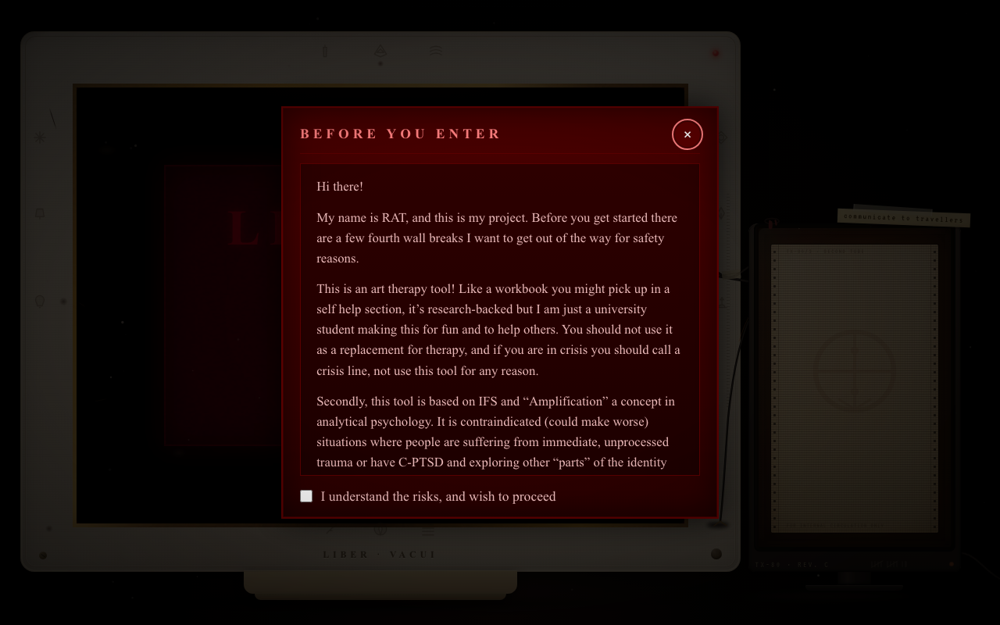
01Boot gate
The warning panel states the risks (student-made, not therapy, crisis lines, IFS/amplification contraindications) and the enter button stays disabled until consent is checked.
covenantPower named up front; refusal is the default state. Pass.
voiceRAT plainly, no myth. Correct — safety copy is the one place the maker speaks as maker.
diegeticN/A — chrome, not a room. Correctly outside any traveller's walls.
affordanceDisabled-until-consent enforced and gated in smoke; ×, Esc-equivalent close present.
flag · not ours · blocks narrowAt 439px the sidecar tube overlaps the consent checkbox (verify-rainy gate fails 7×, all one cause). Sidecar lane must fix before it ships.
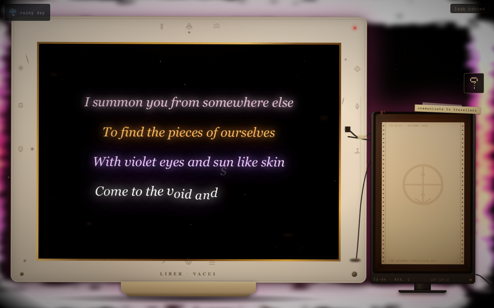
02The eclipse ritual
Four summoning lines light four arcs of turbulence-filtered fire that fully eclipses the monitor from behind — never clipped by bezel or screen, re-anchoring if the desk re-seats.
covenantMotion with consent (reduced-motion path is static arcs); two true motions (fire, letter-rain). Pass.
voiceWanderlust's pink summoning register, matching her theme and lines. Pass.
diegeticRitual fire in a room that holds a session candle and a pilot-flame LED. Pass.
affordanceClick finishes early; pointer-events none so nothing is trapped. Pass.
flag · ours · cosmeticThe top arc glares slightly white where the core gradient peaks. Noted, not blocking.
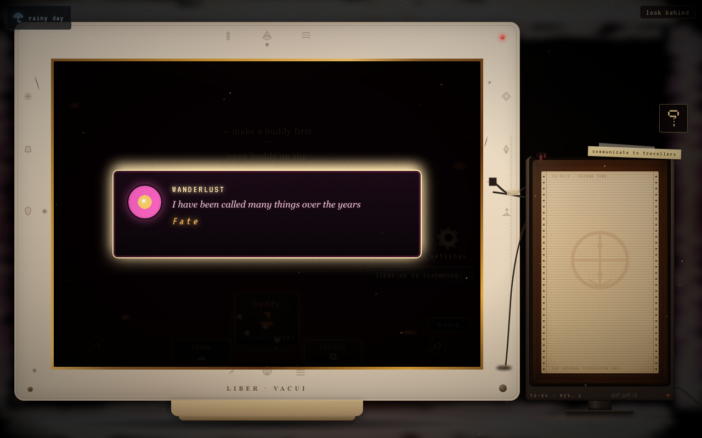
03Names beat
Wanderlust's names arrive one tinted line at a time, each flickering the box it lands in.
covenantOne hover-revelation discipline holds; myth voice earns its theatrics. Pass.
voiceWanderlust all-caps myth allowed; Riason will answer dryly later. Pass.
Riason demonstrates on the real rooms with fake copies. The clean slate is the proof.
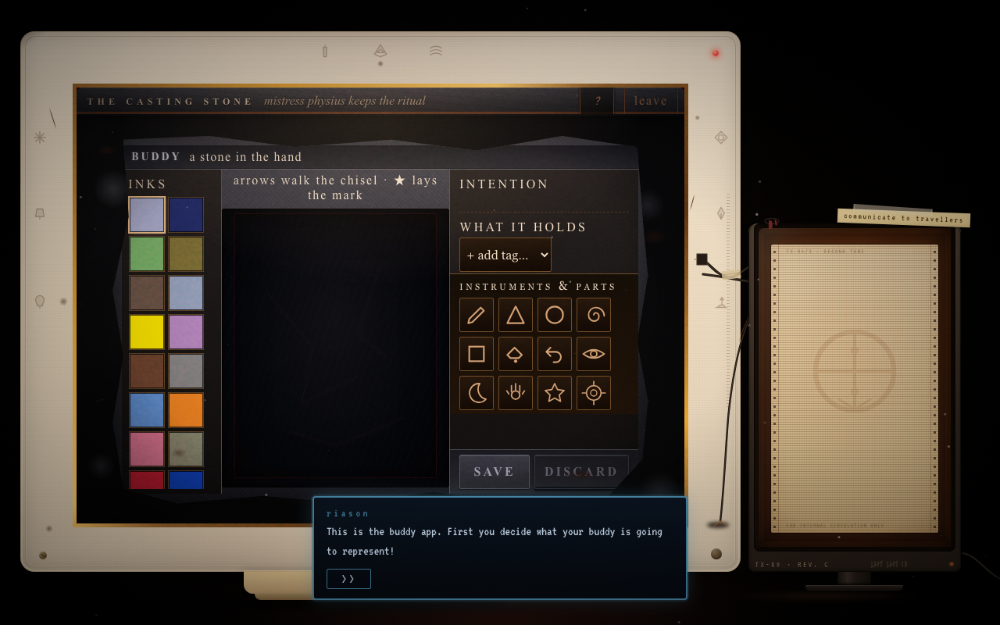
04Buddy demo, stone room
Riason types an intention, picks one ink, strokes one circle, and previews — then walks the traveller to the tent instead of the desktop.
covenantWrites nothing (smoke asserts zero artifacts after). Veil denies with a line, never a trap. Pass.
voiceRiason dry mechanics throughout. Pass.
affordanceOne >> per step; veil yields to the bar. Note: his >> predates the 44px bar — flagged below, fixed in the tent's copy.
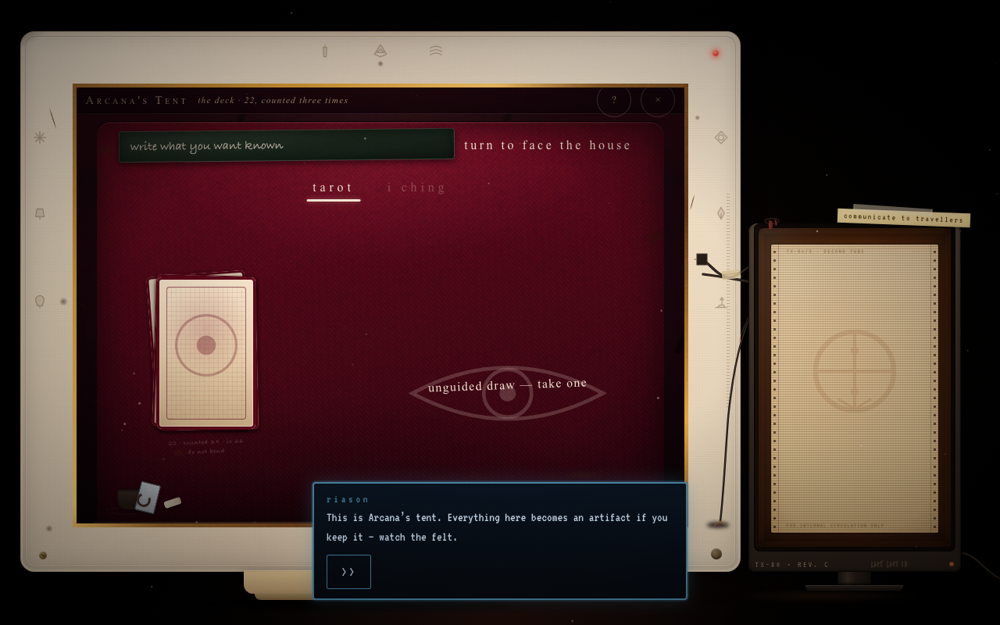
05Artifact birth, felt table
In the tent Riason asks a fake question, draws a real prompt, flashes keep without keeping, and bursts the card on the felt: birth demonstrated, nothing born.
covenantPending draw unwound (tally restored, no record); demo bar removed on exit. Own stylesheet, Riason register. Pass.
voice“Had I kept it, that burst is the birth” — teaching in his voice, less abstract than the old desktop overlay. Pass.
diegeticDeck, slate, chalk, burst — all the tent's own furniture. Pass.
affordance>> is 44×57 verified on screen; veil deny proven; prompt's own ×/discard untouched. Pass.
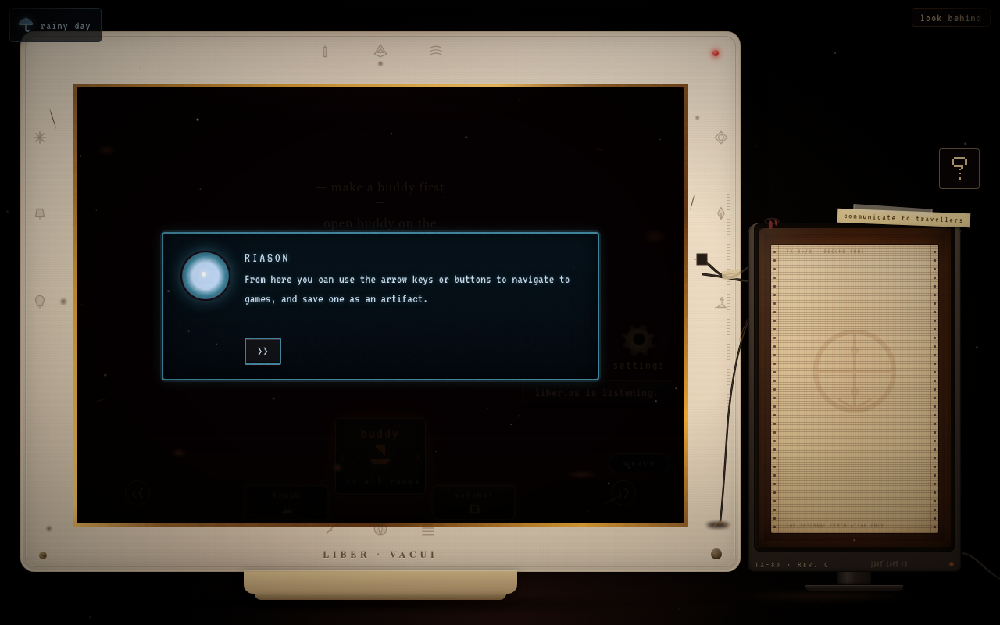
06Bind prompt, desktop
Back home, one fake artifact teaches the relation gesture: click it, the chain bursts, Wanderlust returns, the wipe takes it all.
covenantFake chain writes nothing; finale shelves nothing. Pass.
shadowDestruction rehearsed safely before real keeps exist — the tutorial's load-bearing scare. Pass.
IIIDesktop — the constellation
Artifacts orbit the star; the dial turns the rooms; the prompt engine asks once per cycle.
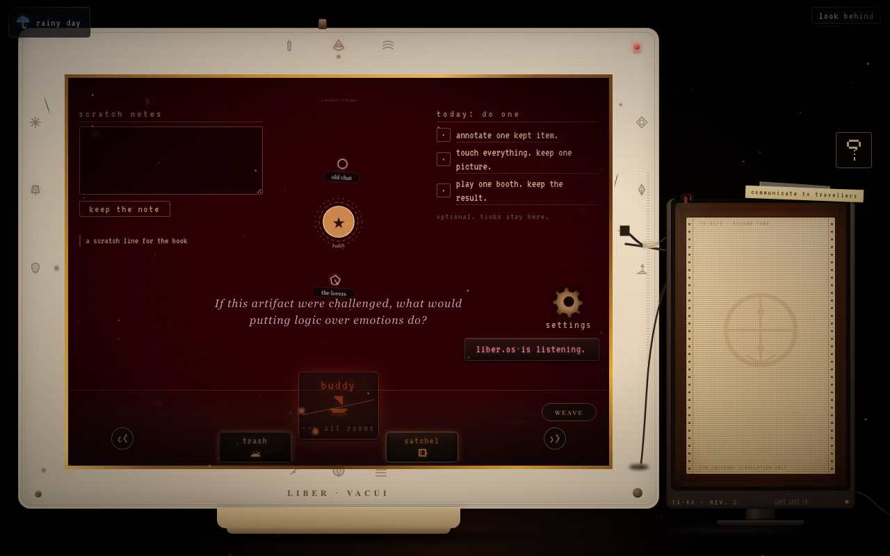
07Populated desktop
Stone buddy, sealed chat, and a kept card orbit the hub; scratch notes keep to the satchel; today's three tasks tick in place.
covenantFull-bleed room, no chrome competing; dial is the room's own furniture. Pass.
diegeticCarvings, scars, LED wax mound, plate — the machine's handled history. Pass.
affordanceDial arrows ≥44px effective; hover pauses the orrery for humans. Pass.
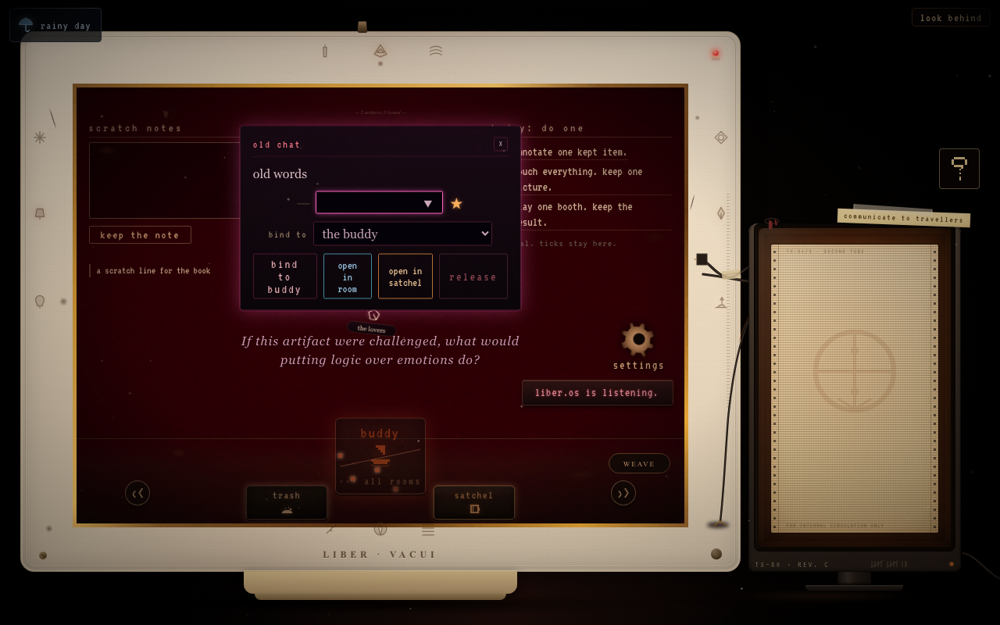
08Mini-menu
Clicking an artifact opens its verbs: bind to buddy, open in room, open in satchel, release — the whole relation grammar in one card.
Leather, ribbon markers, brass corners; the spine thickens as notes, keeps, and relations file in.
diegeticEx libris plate, highlighter set, find-in-drawer. Pass.
flag · known · recordedFind input centre hit-tests the binding SVG at 439 (verify-439 baseline dead=1, lane B's room). Reported, not fixed here.
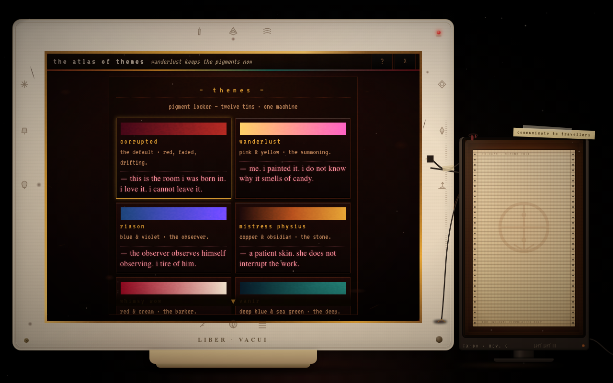
19Themes — pigment locker
Twelve tins, hover-preview wears the skin for real without writing state, click commits through a pigment wash.
covenantMachine-only classes; grade veil is blend-only so fixed overlays keep working. All 8 sampled skins verified applied. Pass.
voiceEach tin carries its traveller's opinion — pigment, not preference. Pass.
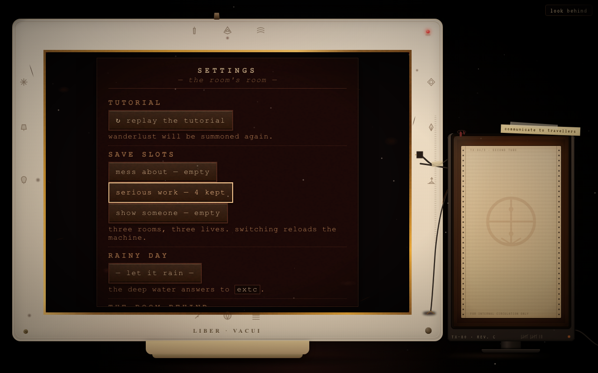
20Settings — maintenance panel
VFD slot display, two-switch wipe interlock, save slots, weather switch mirroring the same single owner.
covenantDiegetic frame that genuinely instructs (a form may instruct in-world). Native confirm dead in Tauri → two-step in-app. Pass.
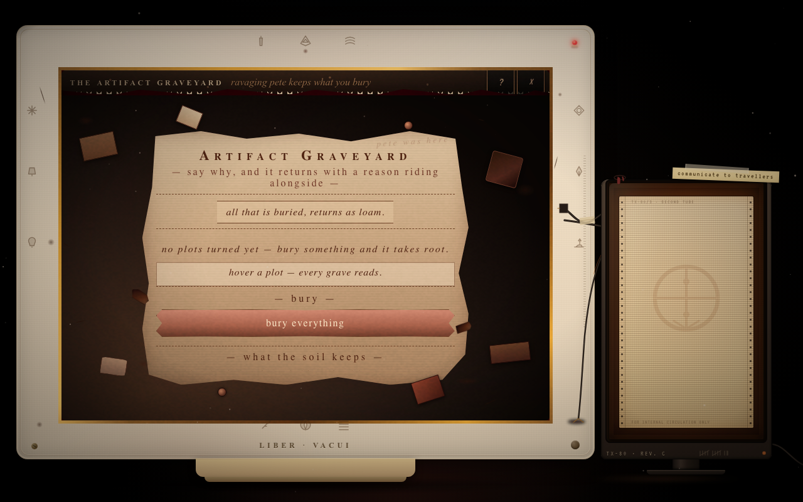
21Trash — the graveyard
Say why, and it returns with a reason riding alongside; bury everything is armed, never casual; dig restores.
voiceRavaging Pete keeps what you bury — and grows it. Pass.
shadowGraves that grow things: the discard pile, thriving. Pass.
VRetired & mapped
Retired rooms leave forwarding addresses, not holes.
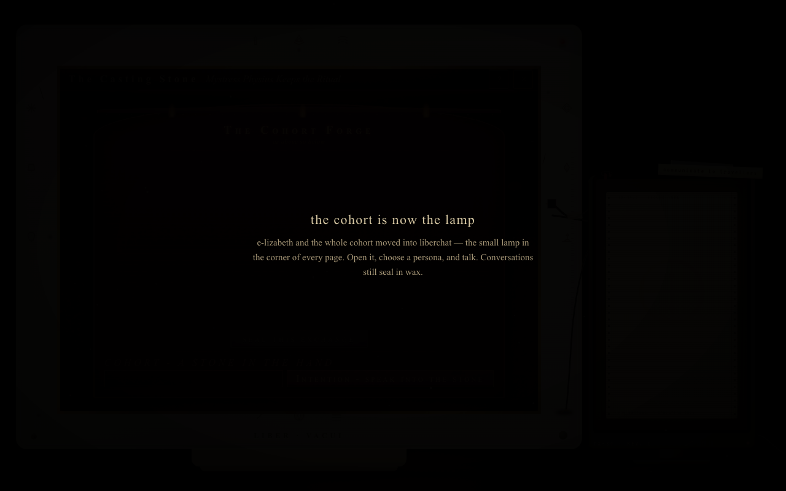
22Cohort — now the lamp
The cohort moved into liberchat: the small lamp in every corner. Conversations still seal in wax. The page says so and steps aside.
covenantRetirement note, no dead door. Pass with the note below.
flag · presentation · weak frameThe page renders very dark — honest (it is a note, not a room) but it photographs like an error. Candidate: give the note a candle.
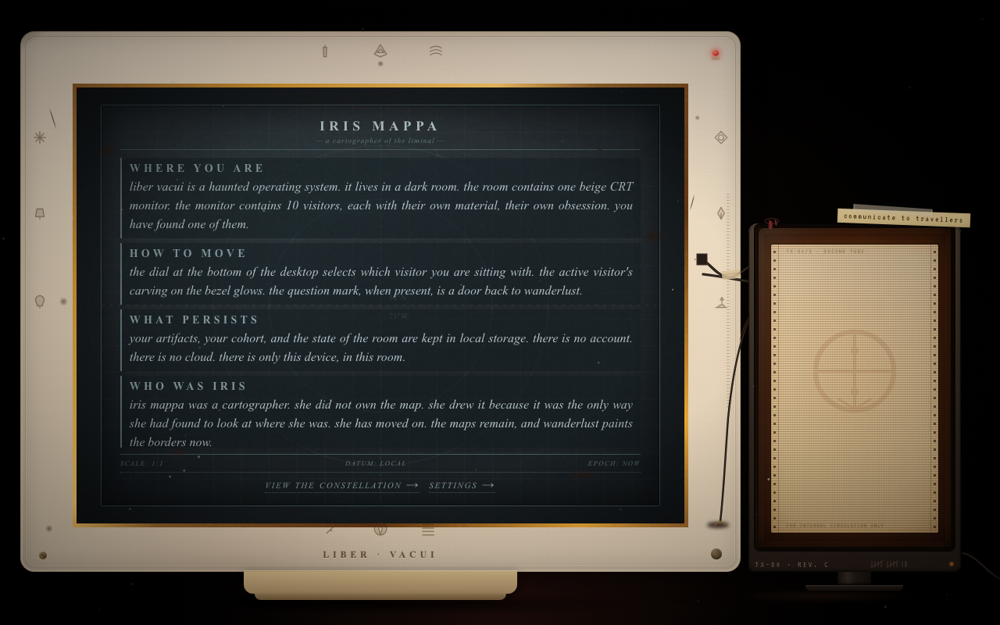
23About — Iris Mappa's map
Where you are, how to move, what persists, who Iris was — a cartographer's residue, dated local, epoch now.
diegeticScale, datum, cross-references to rooms; a document that genuinely instructs. Pass.
VIRain — the harsh layer
Weather, not sentence. The storm is invited, dismissible, and gated — and now it asks harder.
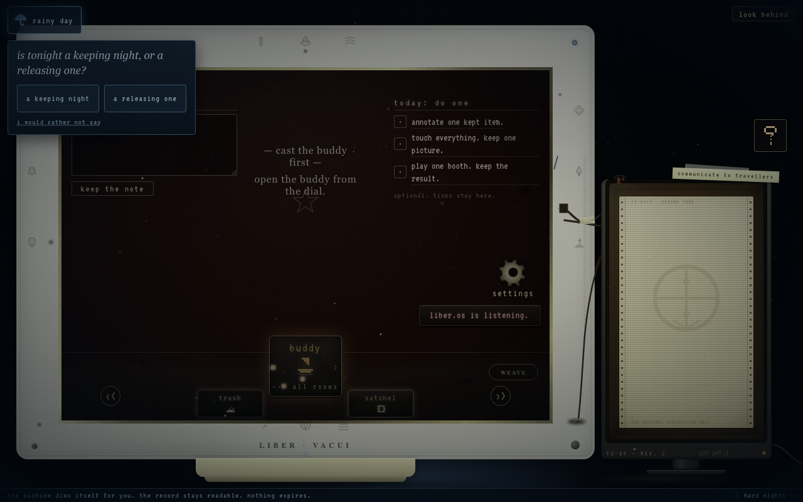
24The night's question
One question per sitting, rotating by the sitting itself — keeping/releasing, the un-felt thing, the loud voice, the carried thing. Two answers or none; nothing gated; forgotten by morning.
shadowAvoidance, inner critic, mask, and burden — flavored, never quoted. Harsher, still kind in structure. Pass.
covenantOnce a night, never twice; decline is a real answer, not a nag (gated). Pass.
affordanceAll three buttons full targets; helplines one click away in the ticker. Pass.
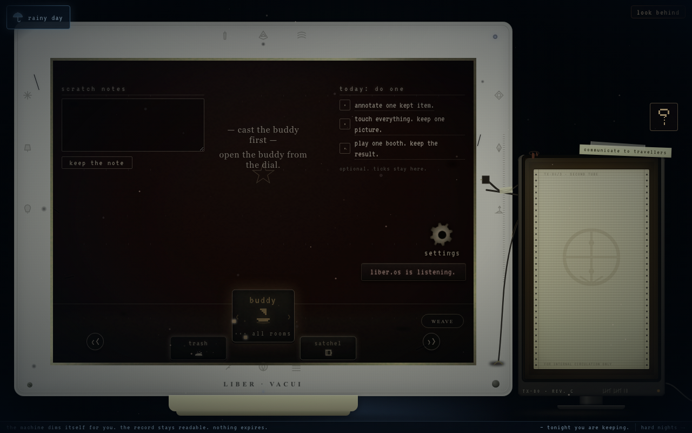
25Rainy desktop + echo
The machine cools to grey, the ticker keeps the night's answer, the record stays readable, nothing expires.
covenantReal palette shift per room in its own stylesheet, never an opacity wash (121/121). Turning it off restores byte-identical. Pass.
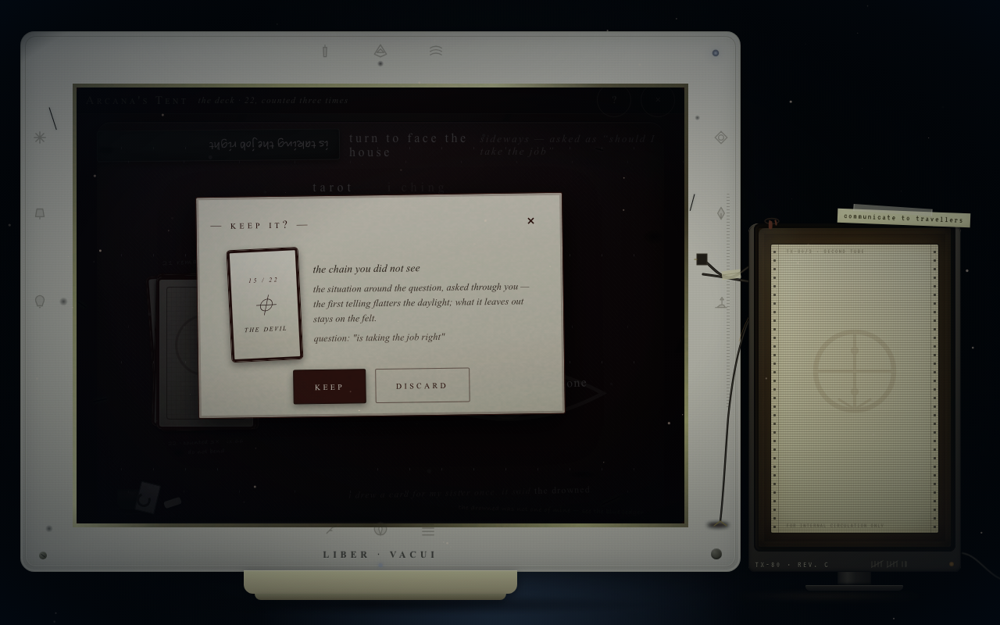
26Sideways catch, rainy tent
Ask it sideways on a rainy night and the rim chalks the earlier wording — then reads for you anyway. Sitting-local, six seconds, zero writes.
shadowCaught rewording, by felt and chalk — anger at being seen through, with the draw intact. Pass.
covenantRefuses to pretend, never refuses to read; wipe the slate and it dies with it. Pass.
affordanceChalk note only, no new controls, no timing pressure. Pass.
VIIVerdict table
Every lens, one line. The deck's claims in one place.